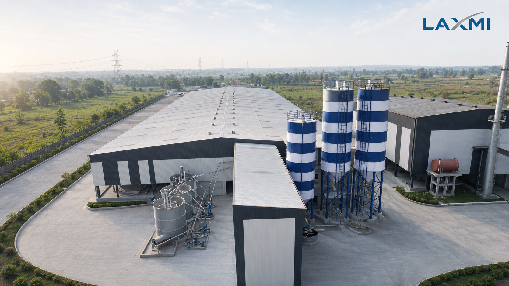
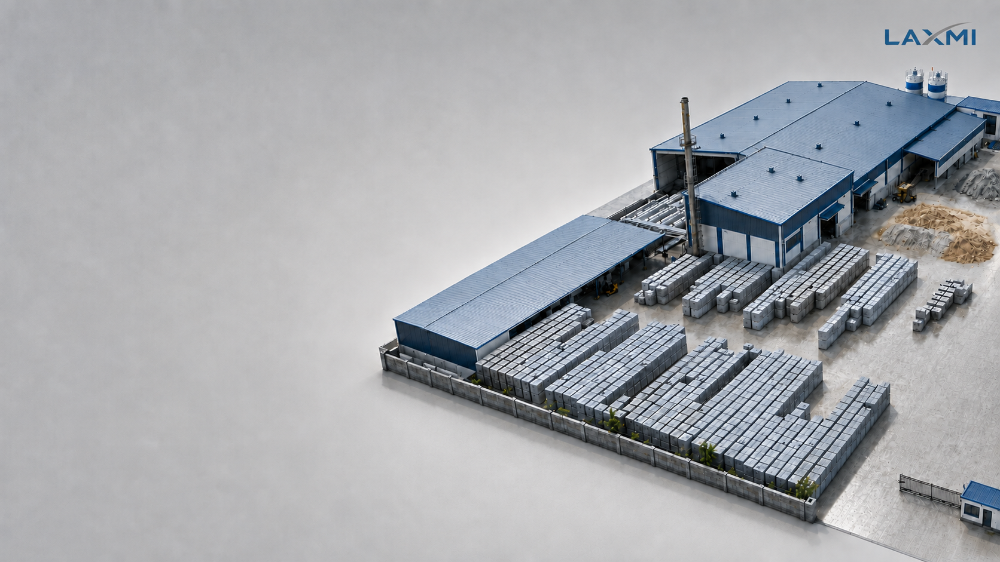
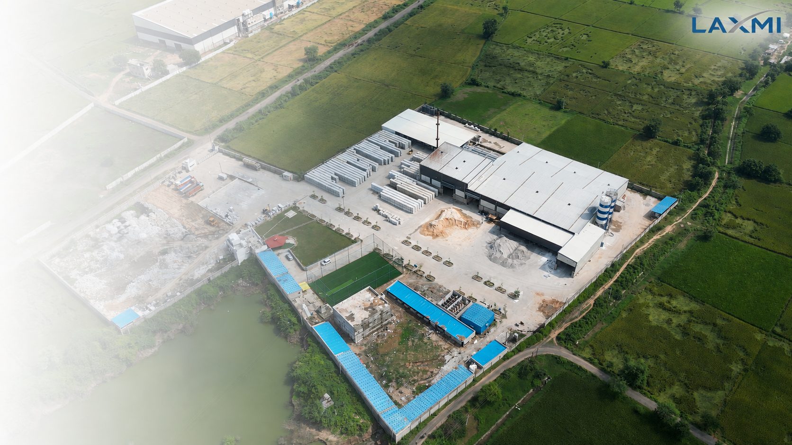
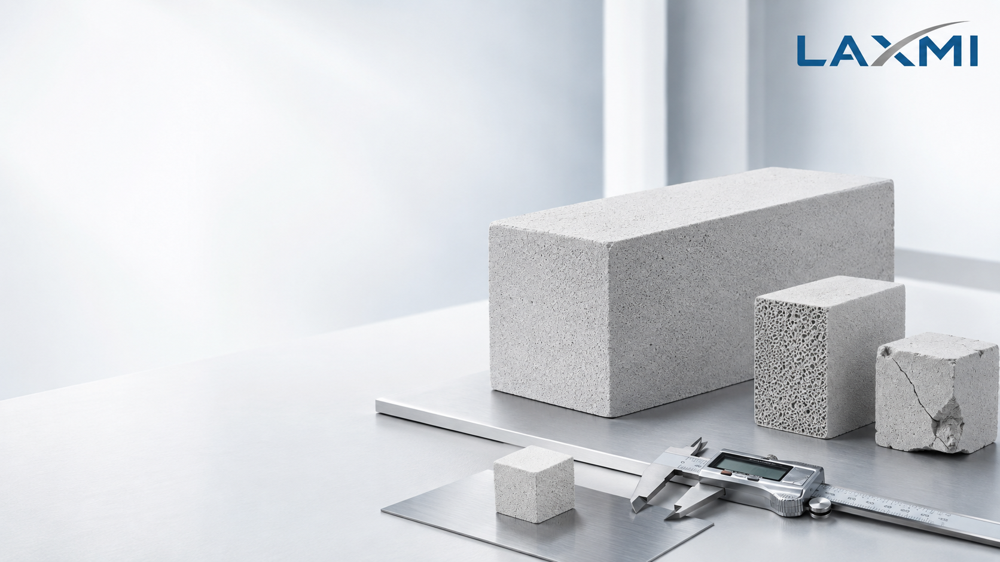
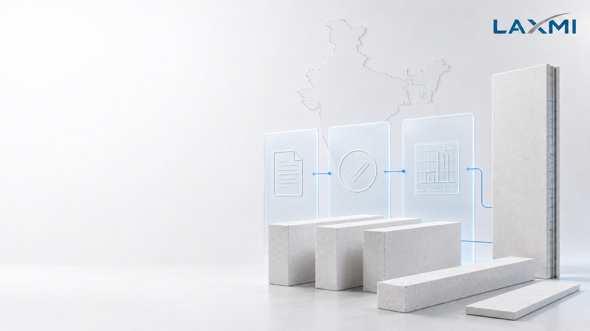

Build the right production solution.
From AAC block and panel plants to Dry Mix Mortar Plant solutions, Laxmi brings plant, machinery, and engineering context together into one complete system.

Choose your solution
path before machinery.
Start with the complete production requirement, then choose the equipment, capacity, and engineering path.

AAC Block & Panel Plant
Turnkey production solutions for autoclaved aerated concrete blocks and reinforced structural wall/roof panels. Capacities from 50,000 to 500,000 m³/year.

Dry Mix Mortar Plant
High-precision automated dry mortar mixing, drying, dosing, and packaging plants. Capacities from 40 to 400 tons/hour for high-value building mortars.
A complete
AAC production plant.
The core offering is an Autoclaved Aerated Concrete (AAC) block & panel plant, bringing process, layout, and machinery together into one integrated production system.
AAC Block Production
High-efficiency manufacturing line for standard, lightweight, thermal insulating, and interlocking masonry blocks with zero material waste.

AAC Reinforced Panel Line
Reinforced wall, roof, and floor panel manufacturing solution with automatic steel mesh welding, anti-corrosion dipping, and tongue & groove profiling.
The AAC plant,
in one view.
Explore the plant layout to understand how production zones, equipment and material flow are arranged within the complete system.


General Arrangement Layout
Custom architectural and civil engineering layouts designed for minimal internal transport distance and maximum land utility.

7-Stage Synchronized Flow
Raw material grinding → automated batching → mould pouring → precuring → 3-stage cutting → autoclaving → automatic packing.
A dedicated
mixing & conveying system.
Laxmi's Dry Mix Mortar Plant features 40–400 ton/hr production ranges, high mixing accuracy, efficient sand drying, precise additive dosing, and automatic packaging lines.

Dry Mix Mortar Plant
High-precision automated mixing plant engineered for consistent production of construction mortars, jointing adhesives, and plasters.

Associated Mortar Products
Manufacture high-margin specialized products: AAC Block Jointing Mortar, Eco Plaster, White Wall Putty, and Tile Adhesive.

Automated Dosing & Bagging
Computerized additive dosing system and high-speed rotary valve bagging line for clean 25kg / 40kg bag filling and palletizing.
Real plants.
Real manufacturing context.
Physical proof of Laxmi's heavy manufacturing capability and active project delivery across India.
INSTALLATIONS
Active commercial AAC block & panel plants commissioned across India.
WORKSHOP
Heavy structural welding, CNC machining, cutting table calibration, and assembly floor in Ahmedabad.
DISPATCH
Finished plant machinery loaded on heavy transporters and dispatched to turn-key client sites.
Choose the solution before the machine.
A structured 5-step path to move from initial project intent to full commercial production.
Not sure which solution fits?
Start with your product, site
and production requirement.
Our engineering team will guide you into the right plant, machinery, and turnkey execution path.